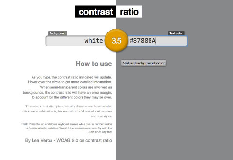
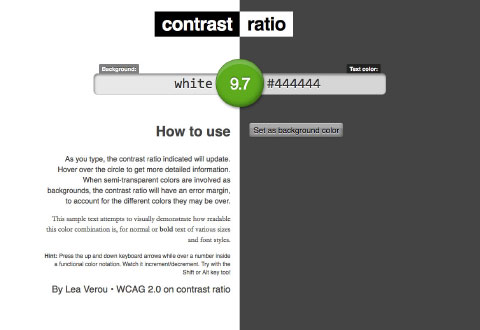

Usage and implementation for Colours within Web Design Language.
Introduction
Royal Canin brand colours are well established and the Web Design Language aims to adhere to these references. The colours set out below will form the base colours for all components, with a secondary palette introduced to complement primary colours where an alternate colour is required.
Colours are presented here by their name, Hex value and Sass variable.
Primary brand colours will emphasise the Royal Canin brand throughout the Web Design Language. Brand red should only be used when brand reinforcement is required, too much brand red will lose impact. Medium and light greys are to be used to complement brand red. White should remain a background colour or a text colour on red.
Secondary brand colours should be used for secondary pieces of content or where a user needs to be alerted to a state. Text colour should be used throughout designs & implementation and represents the best colour contrast for use on white and light grey background. Success and Error colours are to be used when a user requires feedback on a an action. Button alternate should be used when a button colour is required but should be secondary to the main brand red.
Button hover states will be handled as part of the css. SASS enables a ‘darken’ attribute to be applied to a default brand colour reference to ensure the correct hover reference is always applied. In the hover instance, a 'darken' attribute of 5% will ensure the colour reference differs enough to give the user a visual cue to an interaction.
Active state will again rely on the darken attribute to visually represent a button active state. As the click will only be active briefly a darken attribute of 15% will ensure the user is aware of the change to represent button click.
Active state will again rely on the darken attribute to visually represent a button active state. As the click will only be active briefly a darken attribute of 15% will ensure the user is aware of the change to represent button click.
Traditional grey text colour contrast
Updated dark grey text colour contrast
